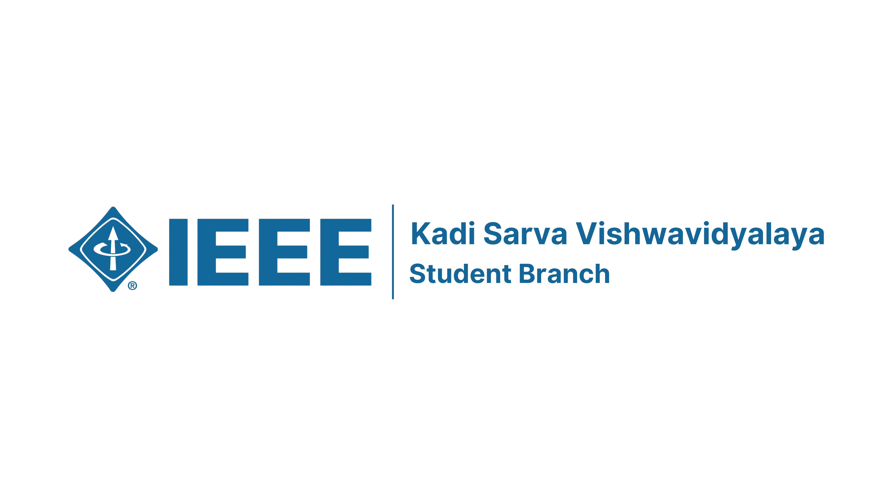

The IEEE Student Branch at Kadi Sarva Vishwavidyalaya (KSV) is dedicated to fostering innovation, technical skills, and professional growth among students. As part of the global IEEE community, our branch organizes workshops, seminars, and events to empower students in the fields of engineering, technology, and science. Join us to connect, learn, and lead with IEEE!
Visit IEEE KSV SB